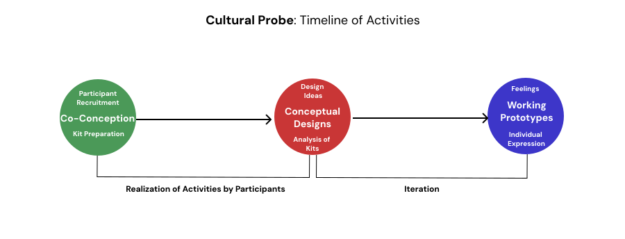
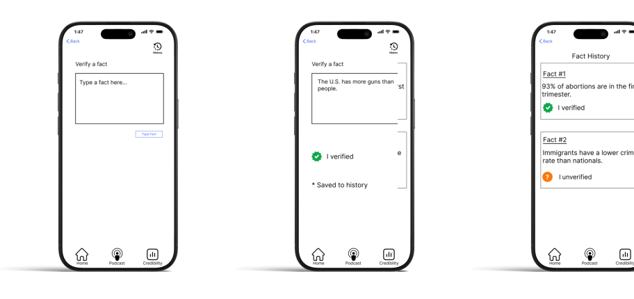
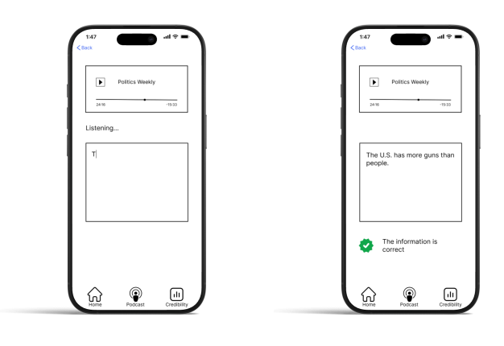

UX/UI. UX/UI Research. Design Strategy.
UX/UI Designer and Researcher
Eric Verdes
Abhimanyu Kumar
Alex Thom
Bennet Santora
Jan 2025 - May 2025
Figma
INFO 4400 - Qualitative User Research and Design Methods
Gen Z isn’t turning to cable news—they’re tuning into political podcasts while walking, commuting, or working out. These shows feel personal and authentic, but that intimacy can mask misinformation. In a space where opinion and fact blur easily and multitasking is the norm, critical thinking often happens after the episode ends.
Our project explored how Gen Z engages with political podcasts, how they build trust, and what prompts reflection or skepticism. Using diary studies and cultural probes, we uncovered that trust is shaped more by transparency than neutrality—and that the podcast ecosystem lacks tools to support informed, reflective listening. This research laid the foundation for designing solutions that promote media literacy in today’s decentralized media environment.
How might we design a solution that helps Gen Z critically engage with political podcasts without disrupting the authentic, immersive experience they value?
The Credibility Companion was born from a challenge we observed in Gen Z’s media habits: the tension between emotionally engaging content and the lack of tools to assess credibility in real time. Podcasts foster trust through personality and storytelling, but often blur fact and opinion. We saw this as an opportunity to design an intervention that strengthens critical reflection without compromising the listening experience.
A post-listening credibility tool for political podcast consumers. The Credibility Companion introduces fact-check summaries, community-driven credibility notes, and hands-free audio prompts—allowing Gen Z listeners to reflect on political content after listening, while preserving the authenticity and flow of the podcast experience.
Gen Z’s turn to political podcasts creates new trust and misinformation challenges. Existing research on emotional engagement, trust formation, and media habits shaped our understanding of the problem.
We conducted initial contextual interviews with Gen Z podcast listeners to explore how they engage with political content, build trust, and navigate potential misinformation.
User interviews revealed that Gen Z values accessible, simplified political news but struggles with misinformation, bias, and emotionally charged content; fact-checking habits varied, highlighting a need for tools that support post-listening reflection and credibility assessment. User interviews led to the development of the following user profiles.

We conducted a five-day diary study to capture participants’ real-time reactions to political podcasts, minimizing recall bias and revealing how emotions, trust, and credibility assessments developed during natural listening.
We used cultural probes to encourage participants to reflect more deeply on their emotions, trust, and media habits, allowing us to capture personal insights that wouldn’t surface through structured methods alone.
Political podcasts exposed participants to diverse viewpoints, fostering curiosity and more balanced political thinking.
Emotionally charged content often led to post-listening research, fact-checking, and critical evaluation.
Participants trusted podcasts that openly disclosed bias and cited sources, valuing authenticity over neutrality.
Multitasking while listening reduced real-time reflection but highlighted the importance of post-listening tools to support deeper processing.
Create a solution for Gen Z political podcast listeners by helping them receive post-listening fact-checks, access credibility notes, and get hands-free auditory feedback without interrupting their listening experience. So that they feel empowered to critically evaluate information, navigate misinformation confidently, and stay informed while engaging naturally with podcast content.
We sketched low-fidelity wireframes to explore core solutions, focusing on seamless integration with natural listening habits. Key features included post-listening fact-check summaries, community-submitted credibility notes, and podcast credibility screens—all designed to support critical reflection without interrupting the immersive podcast experience.
Credibility Companion is your all-in-one political podcast credibility tool—helping listeners reflect on content, access fact-check summaries, and engage with community-driven insights without disrupting their listening flow. It keeps podcast engagement and credibility assessment in sync, ensuring a seamless, reflective experience from listening to post-episode evaluation.
Delivers credibility assessments after each episode, allowing users to reflect without interrupting their listening.
Enables listeners to contribute, upvote, and review credibility notes, building a collaborative fact-checking ecosystem.
Provides real-time audio feedback, giving users credibility insights while they multitask, without breaking the podcast flow.
After finishing an episode, users can review key claims, explore community feedback, and view credibility assessments—all designed to support thoughtful reflection without disrupting the listening experience.
Users can contribute and review credibility notes submitted by the community, creating a collaborative fact-checking system that surfaces diverse perspectives and highlights key information.
While listening, users receive brief, non-intrusive auditory cues that alert them to potentially disputed claims, allowing them to stay informed without pausing or breaking their natural listening flow.
This project deepened my understanding of UX research and its role in effective design. Using methods such as diary studies, cultural probes, and literature reviews, I extracted insights and prioritized user needs while exploring how political podcast consumption shapes media literacy. The experience reinforced the importance of research-driven design in developing tools that foster informed and engaged communities.